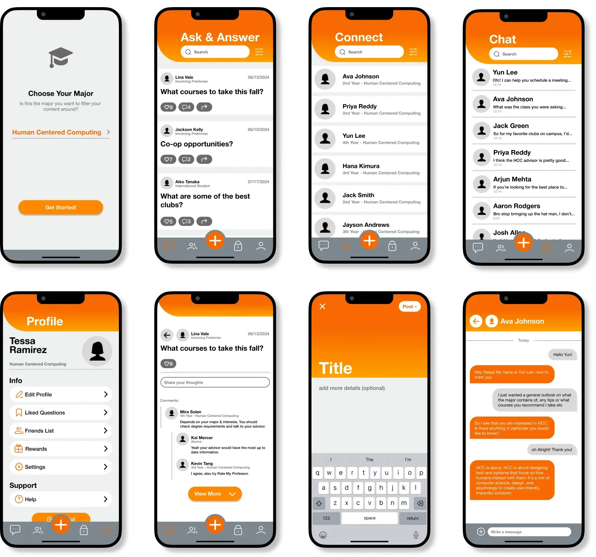

ROARlink
An onboarding assistance app for newly admitted Rochester Institute of Technology students
An Overview
The onboarding process for incoming university students has improved over the years. Despite this, there are still holes in the system. When our professor asked us to explore RIT's process, my team and I quickly came to the consensus that many of our decisions would’ve been different if we had been better informed during the onboarding experience.
As well as the feeling that our major, Human Centered Computing, was suffering from a lack of accessible and clear information for would-be students.
ROLE
Team Lead:
Oversaw UX research, UI design, and delegated tasks throughout the design process
TIME
November 2024 - December 2024
TOOLS
Figma, Fig jam, Zoom, Google Forms
TEAM
Bliss Dsouza
Richard Rangala
PROBLEM
Lack of clarity in major selection for incoming RIT students
As students in the Human Centered Computing major at RIT, my team and I have realized that there has been a shared confusion and uncertainty in our major choice as incoming students. Is this doubt a common theme among other HCC students?
THE SOLUTION
Crowdsourcing advice from past/current students
Ask students/alumni for guidance
- Provides genuine answers from verified major-specific community members
- Discover student-shared information not on official platforms
- Have any major/RIT-related questions answered
View others questions
- Explore a range of incoming students’ perspectives and concerns
- Reduces uncertainty and anxiety by seeing others with similar concerns
- Learn from previously asked questions related to specific majors
Chat privately with others
- Allows for private questions with the same level of trustworthy, experience-based guidance
- One-on-one dialogue provides a low-pressure environment for those not comfortable with posting their concerns publicly
- Contributes to mentorship-style connections, fostering ongoing support that extends past a single question
LITERATURE REVIEW
60% report frustration navigating student portals
I delegated Richard to research information relating to our problem, where he found that students were struggling with their portals (NACADA Reports). Moreover, he found that:
" peers are useful in helping students manage the demands of the first year by normalizing the experience and linking the students to campus supports " - (DeMarinis, 2017)
COMPETITIVE ANALYSIS
RIT’s communication of information lacks authentic experience
Keeping in mind our research and problem, I analyzed 3 software solutions I deemed most relevant to the topic and found that each provided its benefits, but those used by RIT are severely lacking in prominent communication features, unlike UNIBUDDY, which is wholly centered around the idea of connecting students with others.
View in FigmaUSER INTERVIEWS
HCC students need more clarity during their onboarding process
We each conducted user interviews with our fellow students to further develop an understanding of what problems they could have come across with their introduction to RIT and the Human-Centered Computing Program.
INTERVIEW QUESTIONS:
- What prompted you to select HCC as your major?
- How did you discover HCC?
- As a freshman, was there a resource that helped you stay on top of your assignments, or what made it difficult?
- What tool/resource helped you connect with other people, or what do you think was lacking that made it harder?
- As a freshman, did you ever feel overwhelmed by the amount of initial information? If so, what felt overwhelming, and if not, was there something that helped manage it?
THE MAIN INSIGHT
HCC students are missing a central location where they can find clear and concise information to answer all their questions
After completing our affinity map and considering our prior research, we came to realize that even with RIT’s many different locations/resources, there still seems to be a lack of quality information pertaining to HCC.
View in FigmaARTIFACTS
DESIGN
Initial direction
Keeping in mind our earlier analysis of UNIBUDDY, we came to the conclusion to head in the direction of creating an open forum-centered chat app. This takes the experience-based guidance that you can gain from other students, like in UNIBUDDY, but puts it in an environment where there isn’t as much of a strain on the university to hire students to answer questions, since they would be able to be answered by anyone.
TESTING + CHANGES
3 significant improvements in our designs
Despite one of our team members dropping out, we finished the initial design of the app in about 2 weeks. We then each conducted a heuristic evaluation to see what holes there were in our design and proceeded to iterate over the final weeks before our presentation, and had these 3 major changes:
Removal of buttons when inside a question
- Addresses a minor usability problem associated with heuristic #8: Aesthetic and minimalist design
- These buttons became irrelevant once a user is inside a question
Addition of “View More” button
- Also addresses heuristic #8
- Every extra unit of dialogue competes with the more relevant information on the screen
- If users want to see more, they have the option too and aren’t forced
After receiving feedback from peers and our instructor, we proceeded with this final addition:
Implementation of a rewards system
Main feedback: There doesn’t seem to be a major incentive for people to respond/help others on the app; only people seeking help have an incentive to get on the app.
- Additional section that tracks your activity and has a system that rewards you based on it
- Added a rating/thanks tracker, which also adds progress to users’ rewards
- Rewards: dining dollars, merch, campus discounts, or in-app cosmetics
THE FINAL PRODUCT
 View in FigmaCONCLUSION + LESSIONS LEARNED
Opportunities for improvement
As my first UX project I think it went pretty well. Moreover, I’m appreciative to have been able to experience the full UX design process. This has solidified my decision to continue down this career path.
Success metrics
Due this being an unpublished project, we weren't able to collect any actual metrics, but if we could, these are the ones we would focus on:
- Task Success Rate: Keeping track of the percentage of users who complete certain tasks directly shows if a design helps users with their goals
- User Satisfaction: Using post-task surveys or usability scale ratings (SUS) allows you to truely know if a user found your design enjoyable, just because a user completes a task quickly doesn't mean they're not frustrated
- Behavioral Metrics (Clickmaps): Looking at what users are clicking/ignoring sheds light on whether information hierarchy/layout is working as intended
- Path Analysis: Viewing users’ pathing helps us understand whether or not they're getting lost/confused while navigating the app
Lessons learned
- Feedback is so important. After going through this entire project, I've really come to understand design blindness and confirmation bias. These things are detrimental to the design process and are real problems. Making sure I get feedback from my peers and instructor throughout this project really helped prevent these and opened my eyes to things I missed.
- Make sure to start with a strong foundation. One big mistake my team and I made was rushing our design process too much. I think we should’ve explored more options at the beginning and iterated more. Additionally, I should have fleshed out our style guide more thoroughly to prevent design discrepancies when we each worked our parts.
- Switch between macro and micro thinking. As an emerging designer, this is one of the most important things I need to keep in mind. When designing, I need to make sure to take a step back and ask myself if what I’ve made so far aligns with the brand/client’s wider message. Is it scalable? Will this design work across mobile, print, or social media? Depending on the product, these are essential questions that I should be considering throughout the entire design process.
Appreciate you reading through!
For any inquiries you feel free to contact me at jeffrey.jspang@gmail.com